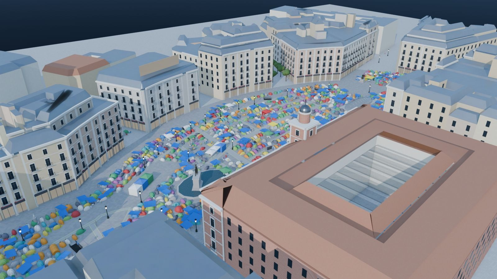
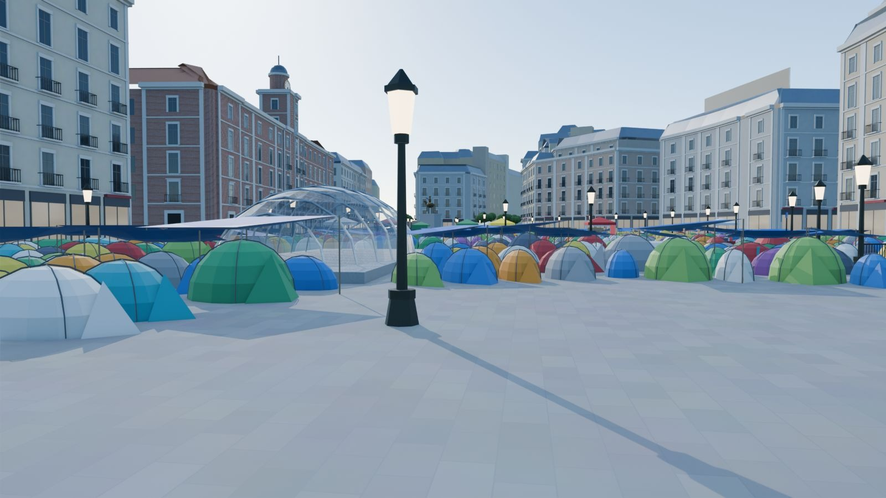
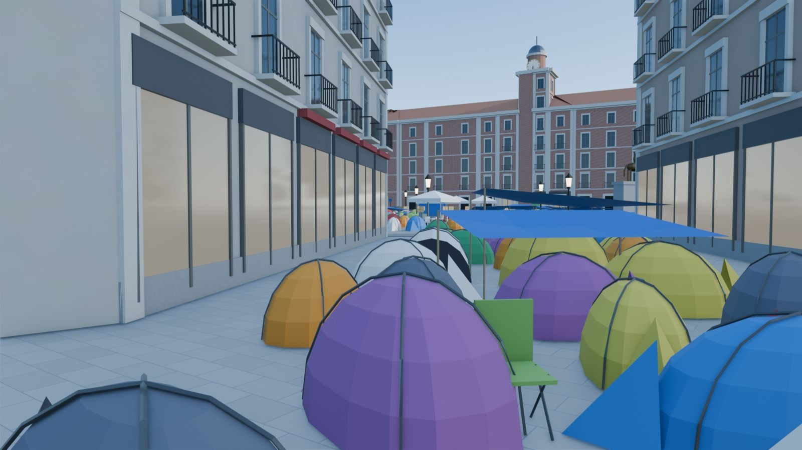
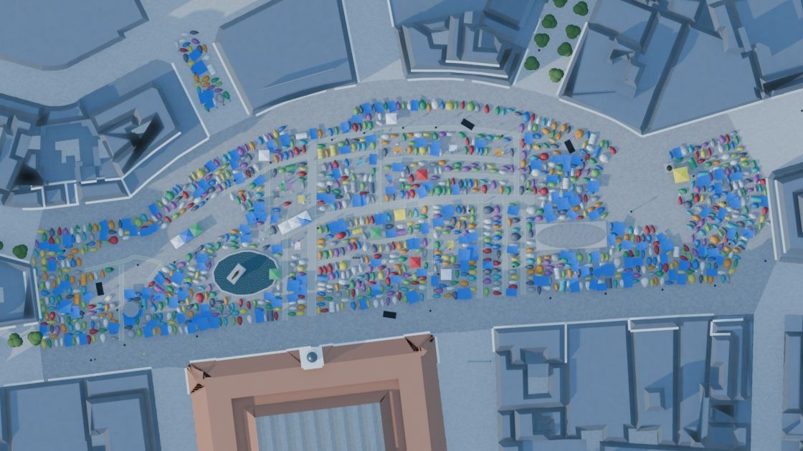
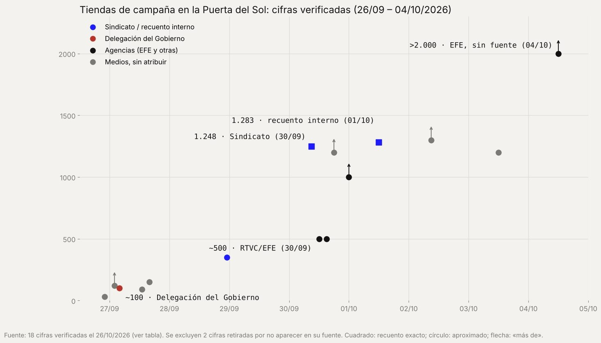
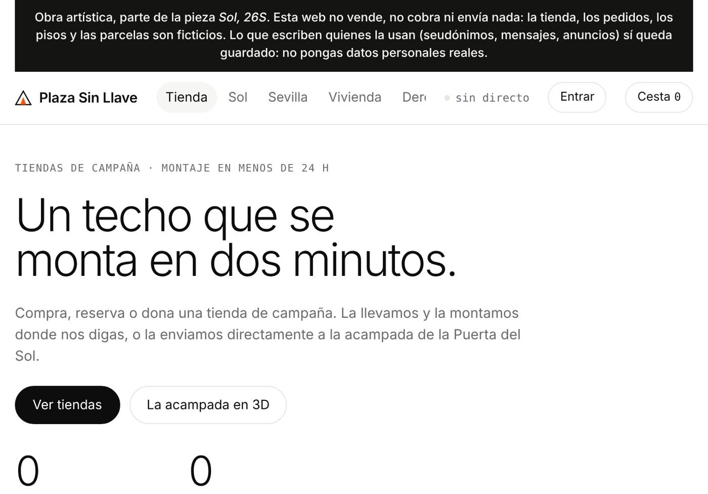
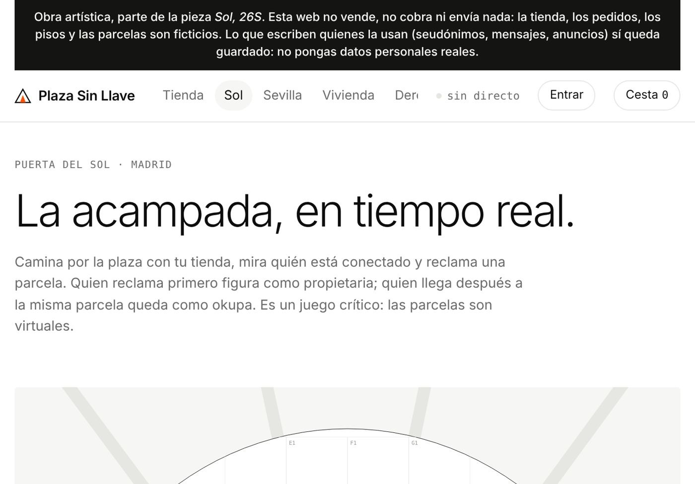

«Sol, 26S» es una obra de memoria permanente sobre la acampada por la vivienda en la Puerta del Sol de Madrid (septiembre–octubre de 2026): una reconstrucción 3D hecha solo con fuentes abiertas (OSINT) para que, cuando se levanten las tiendas, quede un registro verificable de cómo fue la plaza, cómo se organizó y cómo se contó.
“Sol, 26S” is a work of permanent memory about the housing encampment in Madrid’s Puerta del Sol (September–October 2026): a 3D reconstruction made from open sources only (OSINT), so that once the tents are gone a verifiable record remains of how the square looked, how it was organised and how it was reported.
Las imágenes de esta página pueden usarse libremente para informar. / The images on this page may be used freely for reporting.
Free use for news and reporting purposes, always with the credit below. Images may be cropped and resized, but not altered or presented as real photographs or as an official measurement of the camp. For any other use, please write first.
English credit: “Sol, 26S” · Alejandro Osuna Pacheco (2026). Open-source reconstruction. Map data © OpenStreetMap contributors.
Alejandro Osuna Pacheco · aleosupa@gmail.com
Imágenes en mayor resolución, tablas de datos en CSV y el método completo, bajo petición. / Higher-resolution images, CSV data tables and the full method on request.

Aerial view from the south-west: a plausible layout on 1 October 2026 with 1,283 tents.

At street level, 1.65 m high, by the Bear and the Strawberry Tree.

From Preciados street, towards the square.

Overhead plan: the empty areas are those the camp kept clear.

Published tent counts, verified on 26 Oct 2026 (18 of 20 confirmed).

Plaza Sin Llave, the fictional website that completes the work.

Plaza Sin Llave: virtual plots over the square.